Input에 입력한 데이터의 좌우 공백 제거 예제입니다. 속성 trim, ltrim, rtrim 설정으로 기능을 사용할 수 있습니다. 이 기능은 컴포넌트에서 입력 커서가 벗어날 때 적용됩니다.
기본 설정 - 입력값 공백 제거 안함
입력값 좌우 공백 제거
입력값 좌측 공백 제거
입력값 우측 공백 제거
[브라우저(Chrome) 실행 예시]
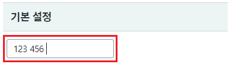
[브라우저(Chrome) 실행 예시]
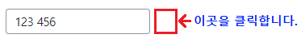
Input의 입력 영역을 클릭하여 입력값을 확인합니다.
입력한 값이 " 123 456 "으로 동일한 것을 확인합니다.
[브라우저(Chrome) 실행 예시]
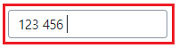
[브라우저(Chrome) 실행 예시]
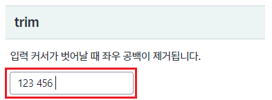
[브라우저(Chrome) 실행 예시]
Input의 입력 영역을 클릭하여 입력값을 확인합니다.
입력한 값이 "123 456"으로 좌우 공백이 제거된 것을 확인합니다.
[브라우저(Chrome) 실행 예시]
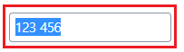
[브라우저(Chrome) 실행 예시]
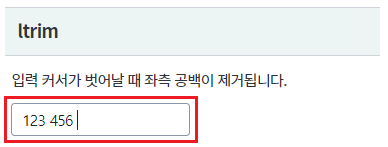
[브라우저(Chrome) 실행 예시]
Input의 입력 영역을 클릭하여 입력값을 확인합니다.
입력한 값이 "123 456 "으로 좌측 공백이 제거된 것을 확인합니다.
[브라우저(Chrome) 실행 예시]
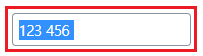
[브라우저(Chrome) 실행 예시]
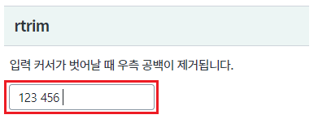
[브라우저(Chrome) 실행 예시]
Input의 입력 영역을 클릭하여 입력값을 확인합니다.
입력한 값이 " 123 456"으로 우측 공백이 제거된 것을 확인합니다.
[브라우저(Chrome) 실행 예시]
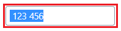
Input의 속성을 정의합니다.
[필수] trim="true" //[default: false, true] 문자열 양쪽 공백 제거 여부
그림 1.웹스퀘어5 SP5 스튜디오의 Property View(속성창) 예시
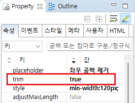
[소스 코드 예시]
<!-- input 의 소스 본문 예시 --> <xf:input trim="true"> </xf:input>
Input의 속성을 정의합니다.
[필수] ltrim="true" //[default: false, true] 문자열 왼쪽 공백 제거 여부
그림 2.웹스퀘어5 SP5 스튜디오의 Property View(속성창) 예시
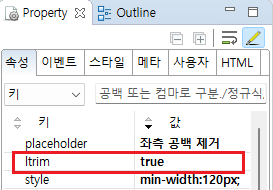
[소스 코드 예시]
<!-- input 의 소스 본문 예시 --> <xf:input ltrim="true"> </xf:input>
Input의 속성을 정의합니다.
[필수] rtrim="true" //[default: false, true] 문자열 오른쪽 공백 제거 여부
그림 3.웹스퀘어5 SP5 스튜디오의 Property View(속성창) 예시
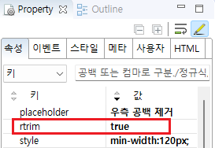
[소스 코드 예시]
<!-- input 의 소스 본문 예시 --> <xf:input rtrim="true"> </xf:input>
ltrim
trim
rtrim
[웹스퀘어5 SP5 개발 가이드] InputBox
링크 : https://docs1.inswave.com/sp5_user_guide/8df43d1f59fab704#3f78e914466d2d7a
[웹스퀘어5 SP5 개발 가이드] InputBox - 좌우 공백 제거
링크 : https://docs1.inswave.com/sp5_user_guide/8df43d1f59fab704#af37272a67de9010
InputBox - 좌우 공백 제거
링크 : https://youtu.be/7I_TWRe5v5I
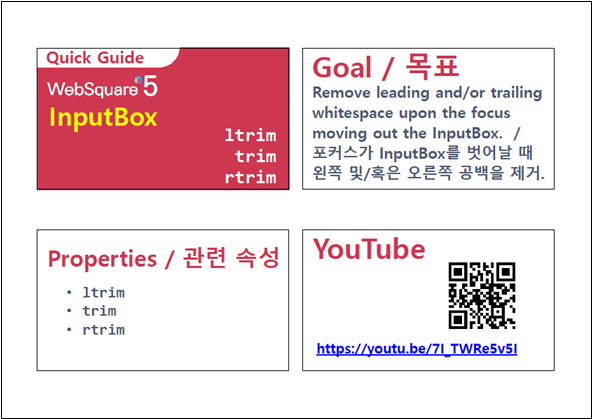